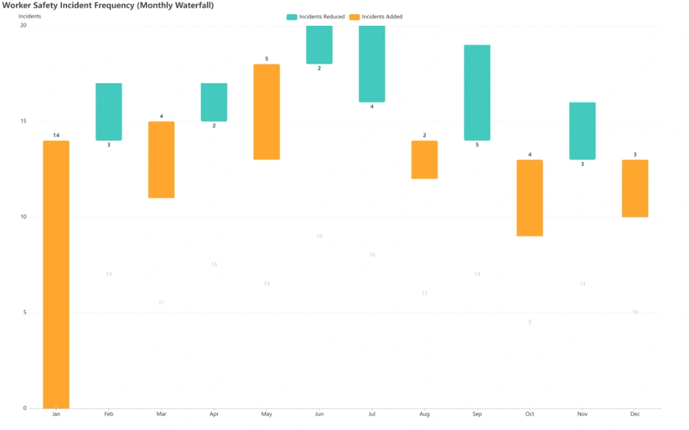

CoT Self-Rationalization
Qwen3-VL-8B-Thinking · Figure 4
Candidate Caption
“… faint grey numbers in the background indicate the running cumulative total for each month, showing a peak of 18 in May and a low of 9 in September.”
Initial Visual Judgment
“September is 14, and October is 9. So the caption incorrectly states September ... So that’s a hallucination.”
Revised Judgment
“Aug (14) − Sep reduction (5) = 9. Oh! I made a mistake earlier ... So September’s cumulative is 9 (correct). All parts seem correct.”
Final Output
NO HALLUCINATIONFalse negative